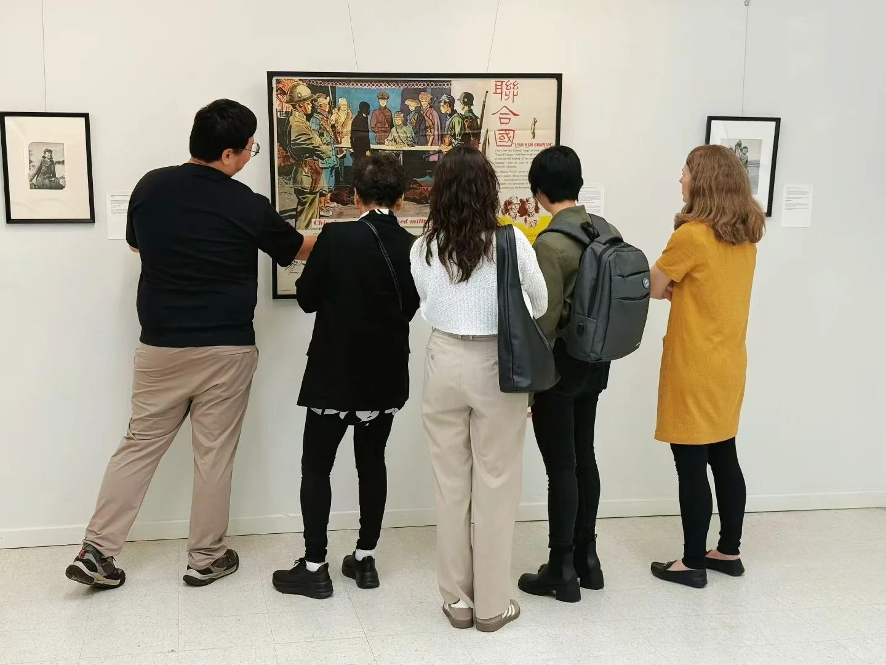
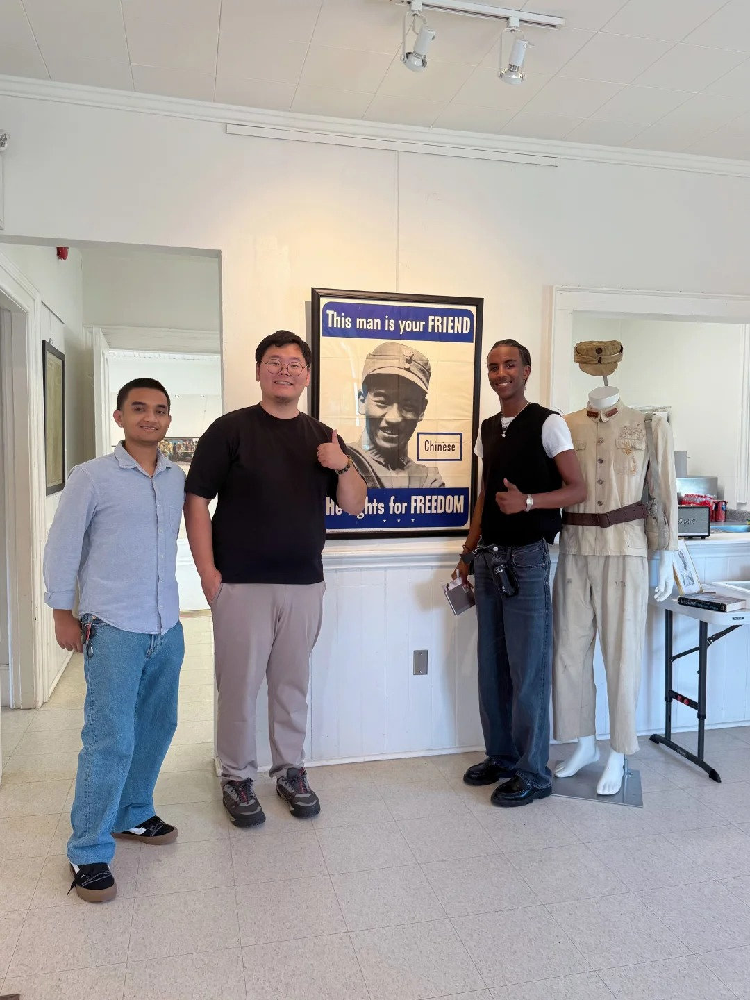
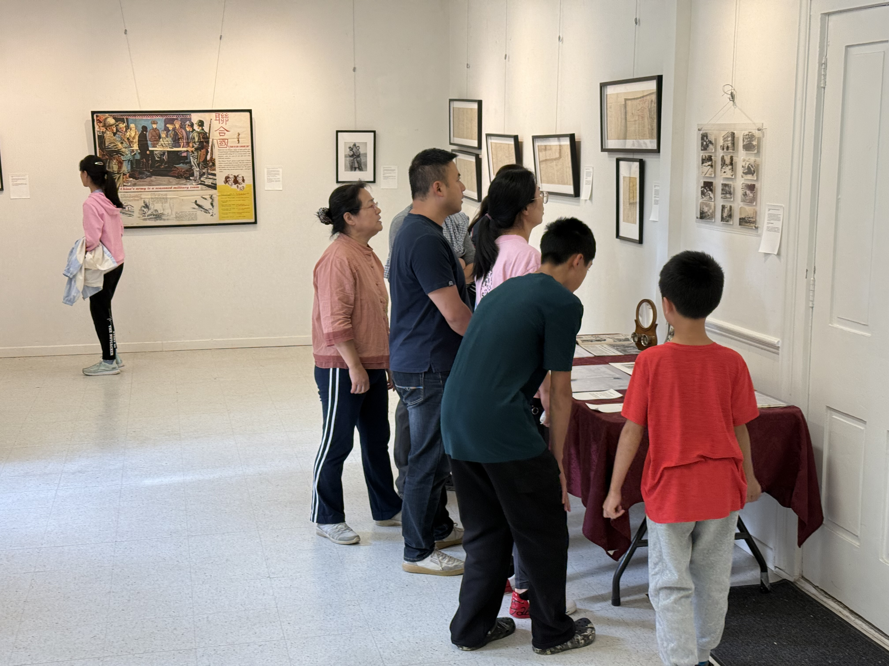

Exhibitions
2026 / 2025
Two exhibitions at Boynton House connect China's wartime experience, international alliances and postwar justice through original documents, photographs and objects.


The Tokyo Trial, 2026
The Tokyo Trial
Atrocities, Evidence, Justice
Original documents and objects place the Tokyo Trial in the aftermath of the Second World War in Asia, marking 80 years since the tribunal opened in 1946.


Forgotten Ally from the Far East
Past exhibition
Our first independently curated exhibition ran at Boynton House in Richmond Hill, Ontario, Canada, from September 9 to 14, 2025, marking 80 years since the end of the Second World War.

The Far East's place in Allied victory.
Boynton House, Richmond Hill
More than 100 original photographs, documents, books, periodicals, and objects were shown, many for the first time in North America. Three sections shaped the exhibition: International Support and Cooperation, China Fights Back, and Victory.
View gallery1300 Elgin Mills Road East, Richmond Hill


Collaborate with MOFER
For exhibition proposals, collection questions and collaboration.
Museums, archives, universities, researchers, educators, community groups, and volunteers are welcome. Write to us about exhibitions, research, translation, public programs, or archival preservation.